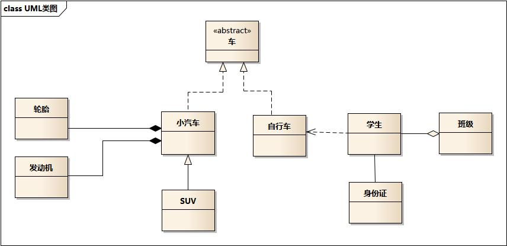

摘要：封装、继承、多态，类图关系，S.L.I.O.D 几大设计原则。
目录
[TOC]
面向对象
Object Oriented
对象
根据 JVM 规范：”对象是动态分配的类实例或数组”。实例是内存中的对象。
抽象：指将一类对象的共同特征提取出来构造类，类是对象（实例）的抽象。一切皆对象。
Student stu1 = new Student("小刘", 22); // 显式创建对象
String str1 = "Hello"; // 隐式创建对象
String str2 = str1 + "Java";
// 匿名对象，对象只用一次，大多用作参数，需区别于单例模式
new Person("张三", 30).tell();
面向对象和面向过程的主要区别在于：解决问题的方式不同；
- 面向过程：把解决问题的过程拆成一个个方法并执行；
- 面向对象：先抽象出对象，用对象执行方法的方式解决问题。一般更易维护、复用、扩展。如包装类，一切皆对象。
面向对象思想
主要包括：
- 三大特性：封装、继承、多态。
- UML 类间关系（数据库中）：
- 实现关系
---△ 虚
- 泛化关系
——△ 实
- 聚合关系
——◇ 实
- 组合关系
——◆ 实
- 依赖关系
---> 虚
- 关联关系
——> —— 实
- 设计原则（设计模式中）S.O.L.I.D
- S 单一职责
- O 开闭原则
- L 里氏替换
- I 接口隔离
- D 依赖倒转
- D 迪米特原则
- H 合成/聚合复用
一、三大特性
封装、继承、多态。见 Java 语言基础文档中。
二、UML 类图和时序图
UML 统一建模语言
可视化的、面向对象的、软件开发的工业标准。
在 UML 系统开发中有三个主要模型：
- 功能模型：从用户的角度展示系统的功能，包括用例图。
- 对象模型：采用对象，属性，操作，关联等概念展示系统的结构和基础，包括类别图、对象图。
- 动态模型：展现系统的内部行为。包括序列图，活动图，状态图。
类间关系及 UML 图例

类间关系及对应 UML 图例、Java 表现形式有：
- 实现关系：带空心箭头的虚线
---△。表现为继承抽象类（<<abstract>>），在 Java 中使用 implements 关键字来实现接口。eg：汽车类实现车接口。
- 车为抽象概念（接口），在现实中无法直接用来定义对象，只有指明具体的子类（汽车or自行车），才可用来定义对象。
- 继承关系为
is-a，虚线 –--。eg：自行车是车、猫是动物。
- 泛化关系：带空心箭头的实线
——△。表现为继承非抽象类，在 Java 中使用 extends 关键字来继承类。eg：SUV类继承汽车类。
- 聚合关系：带空心菱形箭头的实线
——◇。表示整体由部分组成，但是整体和部分不是强依赖的，整体不存在了部分还是会存在。eg：学生类聚合成班级类。公司和员工属于聚合关系，因为公司没了员工还在。
- 组合关系：带实心菱形箭头的实线
——◆。组合中整体和部分是强依赖的，整体不存在了部分也不存在了。eg：轮胎、发动机组成汽车。比如公司和部门，公司没了部门就不存在了。
- 依赖关系：带箭头的虚线
--->。描述对象在运行期间会调用到另一个对象。箭头指向被调用者，“使用”对方的方法和属性。eg：学生依赖于自行车。A 类依赖于 B 类主要有三种表现形式：
- B 类是 A 类方法的局部变量；
- B 类是 A 类方法的参数；
- B 类向 A 类发送消息，从而影响 B 类发生变化。
- 注：双向依赖是一种非常糟糕的结构，应保持单向依赖。
- 关联关系：实线
——。 表示不同类对象之间有关联，是一种静态关系、与运行过程的状态无关，在最开始就可以确定。用来定义不同类的对象间静态的、天然的、由常识等因素决定的结构；是一种强关联的关系。
- 默认不强调方向，表示对象间相互知道，带箭头的实线
——> 表示A知道指向的对象B。通常是以成员变量的形式实现。因此也可以用 1 对 1、多对 1、多对多这种关联关系来表示。eg：乘车人和车票、学生和身份证。
时序图
- 在需求分析阶段，如果与系统交互的 User 超过一类并且相关的 UseCase 超过 5 个，使用用例图来表达更加清晰的结构化需求。
- 如果某个业务对象的状态超过 3 个，使用状态图来表达并且明确状态变化的各个触发条件。
- 说明：状态图的核心是对象状态，首先明确对象有多少种状态，然后明确两两状态之间是否存在直接转换关系，再明确触发状态转换的条件是什么。
- 正例：淘宝订单状态有已下单、待付款、已发货等。比如已下单与已收货这两种状态之间是不可能有直接转换关系的。
- 如果系统中某个功能的调用链路上的涉及对象超过 3 个，使用时序图来表达并且明确各调用环节的输入与输出。
- 如果系统中模型类超过 5 个，且存在复杂的依赖关系，使用类图来表达并且明确类之间的关系。
- 说明：类图像建筑领域的施工图，如果搭平房，可能不需要，但如果建造蚂蚁 Z 空间大楼，肯定需要详细的施工图。
- 如果系统中超过 2 个对象之间存在协作关系，并需要表示复杂的处理流程，使用活动图来表示。
- 说明：活动图是流程图的扩展，增加了能够体现协作关系的对象泳道，支持表示并发等。
时序图：显示对象间交互与协作关系，清晰立体地反映系统的调用纵深链路。按时间顺序排列。
顺序图：显示参与交互的对象及其对象间消息交互的顺序。
包括的建模元素主要有：
- 系统角色（Actor）：可是人、其他的系统或子系统。
- 对象（Object）：三种命名方式：对象名和类名、只显示类名表示匿名对象、只显示对象名。
- 生命线（Lifeline）：表示为从对象图标向下延伸的虚线，表示对象存在的时间。
- 控制焦点（Focus of control）：表示时间段的符号，在这个时间段内对象将执行相应的操作。用小矩形表示。
- 消息（Message）：一般分为：
- 同步消息=调用消息（Synchronous Message）：消息发送者把控制传递给消息的接收者，然后停止活动，等待消息的接收者放弃或返回控制。用来表示同步的意义。
- 异步消息（Asynchronous Message）：消息发送者通过消息把信号传递给消息的接收者，然后继续自己的活动，不等待接受者返回消息或控制。接收者和发送者是并发工作的。
- 返回消息（Return Message）：表示从过程调用返回。
- 自关联消息（Self-Message）： 表示方法的自身调用及同对象内的方法调用另一个方法。
三、设计原则和设计模式
代码异味
程序开发领域，代码中的任何可能导致深层次问题的症状都可以叫做代码异味（Code smell）。
通常，在对代码做简短的反馈迭代时，代码异味会暴露出一些深层次的问题。这里的反馈迭代，是指以一种小范围的、可控的方式重构代码。从负责重构的开发者的角度来看，代码异味可以启发何时重构，如何重构。因此，可以说代码异味推动着重构的进行。
什么是，或者不是代码异味，是一个主观的判断，通常因语言、开发者、开发方法的不同而不同。
常见的代码异味
- 代码重复: 相同或者相似的代码存在于一个以上的地方。
- 长方法: 一个非常长的方法、函数或者过程。
- 太多的参数: 函数或者过程的冗长的参数列表使得代码可读性和质量非常差。
- 巨类: 一个非常庞大的类。
- 冗余类 / 寄生虫: 一个功能太少的类。
- 特性依恋: 一个类过度的使用另一个类的方法。
- 亲密关系: 一个类依赖另一个类的实现细节。
- 拒绝继承: 子类以一种‘拒绝’的态度，覆盖基类中的方法，换句话说，子类不想继承父类中的方法，参考里氏替换原则。
- 人为的复杂: 在简单设计已经满足需求的时候，强迫使用极度复杂的设计模式。
- 超长标识符: 尤其，在软件工程中，应该毫无保留的使用命名规则来消除歧义。
- 超短标识符: 除非很明显，一个变量名应该反映它的功用。
- 过度使用字面值: 为提高可读性和避免编码错误，应该使用命名常量。此外，字面值可以且应该在可能的情况下，独立存放于资源文件或者脚本中，在软件部署到不同区域时，可以很方便地本地化。
参考资料